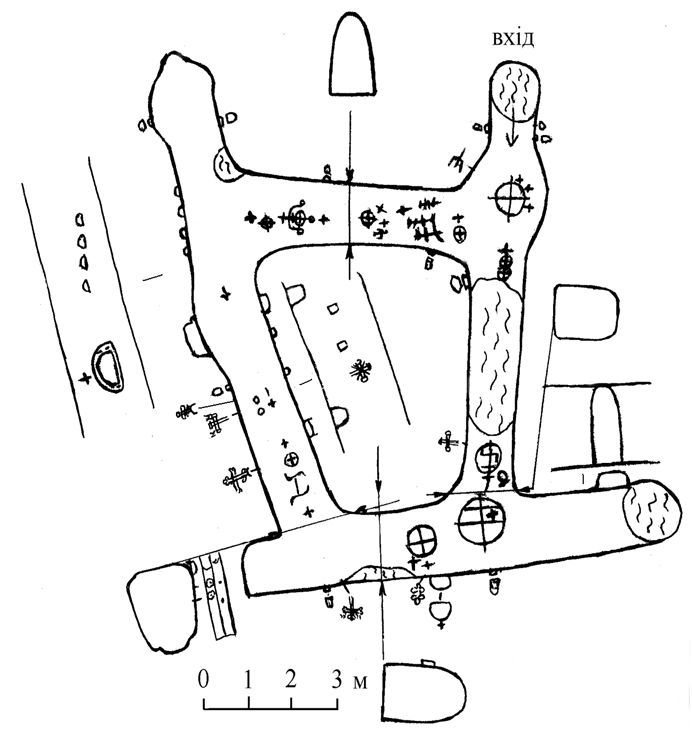

А.Л. Шербань
Зображення християнських символів у підземеллях Опішного
Усі науково досліджені підземелля Опішного (Полтавщина) містять зображення на стінах та стелі, переважно хрестоподібні. Схожі зображення зустрічаються і в підземеллях інших козацьких поселень Середнього Поворскля (зокрема, Великих Будищ, Диканьки (дослідження автора) й Полтави [2]. У даній статті охарактеризую пам’ятку, де зображень найбільше, – у підземеллі, провалля якого вивчене 29 липня й 1 серпня 1996 року на опішнянському кутку «Гончарівка» науковцями Національного музею-заповідника українського гончарства в Опішному.
На жаль, детального плану цієї споруди під час дослідження зроблено не було, але всі конструктивні особливості ретельно фіксувалися відеокамерою. Після аналізу матеріалів відеозйомок [3], використовуючи свідчення археолога Анатолія Гейка й архітектора Овсія Величка, мною було складено схематичний опис і план цього ходу
Підземелля складається з чотирьох відрізків тунелів (орієнтованих приблизно за сторонами світу), поєднаних у чотирикутник. Лише по одному кінцю двох з цих тунелів закінчувалися завалами, що свідчить про можливість їх продовження. Інші закінчувалися тупиками або входили в інший хід. Один із завалів слугував входом для дослідників. Інший виник у ХХ столітті, про що свідчить наявність у насипаній землі фрагментів тогочасного посуду.
Висота всіх ходів – близько 1.7 м, а ширина – дещо більша1 м. Але окремі частини відрізнялися ступенем округлості склепінь, фактурою поверхні, слідами від інструментів, якими викопувалися. Що, на мою думку, свідчить про їх різночасовість і дозволяє прослідкувати періодичність у викопуванні.
На мою (і Овсія Величка) думку, найдавнішим є південний та частина західного ходу. Про це свідчить ретельна загладженість, сірий колір стін, відсутність явно виражених слідів від інструментів, якими вони копалися, бляклість створених кіптявою від свічки зображень. У стінах обох з цих відрізків є ніші. Неподалік від завалу викопано нішу завширшки близько70 см, завглибшки близько40 смі заввишки від дна до стелі ходу. Особливо цікава напівкругла ніша в західній частині ходу, де збереглися сліди від кріплення заслінки. Біля неї знайдено фрагменти зеленого скляного штофа й поруч з ними – кісточки вишні, що, на мою думку, свідчить про зберігання в цій ніші пляшки з вишневою наливкою. На місці з’єднання вищеописаних ходів у східному кутові збереглися округлі глибокі ямки діаметром близько3 см, які залишилися на місці кріплення дверей. Тобто спочатку це був хід завдовжки близько20 м, від якого на північ відходило відгалуження завдовжки близько15 м, вхід до якого закривався дверима. Пізніше (про що свідчить горбкуватість та жовтий колір стін, наявність виразних слідів від копання лопатою, насичений чорний колір зображень на стелі) до цих ходів було приєднано ще два відрізки. Західний продовжено на5 м. У його кінці утворилася печера неправильної форми зі значними слідами від лопати й меншою кількістю – знаряддя з шириною робочої поверхні 4-6 см. У стінах усіх відрізків є ніші для освітлювальних приладів, що розташувалися на місцях перехресть (на протилежній стіні від місця входження одного відрізка в інший), а також приблизно на середині довжини тунелю.
За способом зображення виокремлюються дві групи хрестів (назви у лапках подано за енциклопедією «Символи, знаки, емблеми» [1, С.245]): І. Продряпані з різною мірою детальності на середині висоти стінок – переважно «руські православні» хрести (6 малюнків). Ідентичних малюнків немає, хоча всі дуже подібні і відрізняються лише окремими деталями. Над раменами двох помітні літери ХС й ІС ХС. Лише один з продряпаних хрестів вирізняється округлістю рамен, що робить його подібним до квітки. Оскільки заглиблення одних хрестів патиновані, інших – ні, можна зробити висновок, що вони різночасові. Пізніші – крайні північні зображення західного тунелю. ІІ. Зображені кіптявою від свічки на стелі, верхніх частинах стін і над великими нішами, різноманітні за формою. Виокремлюються такі їх групи: 1. Прямі рівносторонні чотирикінцеві («катакомбний», чи «знамення перемоги»). Вирізняються насиченим чорним кольором. Зафіксовано 12 таких знаків, розташованих у всіх чотирьох відрізках тунелів, переважно біля інших груп знаків та над нішами, скупчень не утворюють. Один з таких хрестів має дещо викривлені кінці рамен, чим уподібнюється до свастики. На мою думку, це пов’язано з недбалістю його зображення. 2. Прямі в колах («круглі»). Виокремлюється три групи таких зображень: — чотирикінцеві (найчисленніші – 6 знаків); — восьмикінцевий (1 знак); — шестикінцевий (1 знак). Восьмикінцевий зображено в південному ході, на місці, де він з’єднується зі східним. Він – один з найстаріших у підземеллі – світло-сірий, ледь помітний під шаром нальоту. Поряд, на початку східного тунелю, зображено шестикінцевий хрест (у колі). На його стелі знаходиться й більшість чотирикінцевих хрестів у колах, хоча по одному з них є й у інших відрізках. Зокрема, у північному, на місці його з’єднання із західним, та у західному – на місці з’єднання з південним. Колір прямих хрестів у колах менш насичений, ніж прямих, навіть зображених поруч, що дозволяє стверджувати про їх ранішість. 3. Семикінцеві й п’ятикінцеві («патріарші» та «папські» – 4 знаки). Скупчуються у північному тунелі, на місці його з’єднання зі східним. Вирізняються чорним насиченим кольором. Подібні до крайніх північних продряпаних хрестів західного тунелю й, на мою думку, близькі до них за часом. 4. Хрест на підставці-тринозі, що при огляді з іншого боку подібний до тризуба. Розташовується посередині північного тунелю, має насичений чорний колір. Інші знаки, не хрестоподібні, одиничні: -подібний до тризуба, розташований у східному тунелі, на місці його входження в північний; —подібний до букви (Н) – у західному ході на місці з’єднання з південним; —подібний до схематичного зображення яблука у центрі південного ходу.
Вищенаведені дані свідчать про різночасовість виокремлених груп зображень, що дає змогу, по-перше, говорити про тривале використання підземель, по-друге, стверджувати, що в різні періоди використовувалися різні типи знаків. Найдавніші знаки зображено на місці з’єднання найстарішого південного зі східним і західним тунелями. Найновіші – по всіх тунелях (прямі хрести), але найбільше – в найпізнішому північному. Зауважу, що жодних знаків немає в кінці західного ходу, що закінчується тупиком. Обмаль їх і в прилеглій ділянці північного ходу. Таким чином, найбільше знаків сконцентровано на місці з’єднання тунелів, що мають продовження.
Про призначення вищеописаних християнських символів у підземеллі свідчать етнографічні матеріали. Адже принаймні 100 років віруючі опішненці малюють хрести з обереговою функцією у своїй оборі на два релігійні свята: Водохрещу (Йордань) та Страсний Четвер. У кінці ХІХ – на початку ХХ століття перед освяченням рублених хат у світлицях малювалися чотири хрести (які символізують чотирьох апостолів-євангелістів, про що свідчать відповідні підписи). Вони були подібними за формою до першої групи зображень з підземелля, але відрізнялися від них способом нанесення – були мальованими фарбами. На Водохрещу хрести зараз зображують переважно освяченою крейдою на дверях, воротах, вікнах, передніх кутах будівель. На Страсний Четвер хрести малювали освяченою («страсною») свічкою на одвірках, сволоках тощо. Старі зображення, як правило, не стирали, а нові малювали або поверх них, або на вільному місці поряд. Метою таких зображень був захист обійстя від грому і нечистої сили.
На мою думку, особливості розташування хрестоподібних знаків у даному підземеллі, їх значна кількість та етнографічні матеріали засвідчують, що вони наносилися з обереговою функцією. Продряпані хрести могли зображуватися на Водохрещу чи перед освяченням підземель, а закопчені свічкою – на Страсний Четвер. На жаль, наявні на сьогодні дані не дозволяють точно датувати як саме підземелля, так і зображені в ньому хрести. На мою думку, їх нанесено у проміжку від другої половини XVII до кінця ХІХ століття, а тривалий період зображення подібних знаків у підземеллі з обереговою метою засвідчує факт усвідомлення його як частини певної садиби.
Можливо, детальніше вивчення іконографії цих знаків допоможе датувати їх точніше. А це варто зробити, адже вищенаведені матеріали показують, яким чином змінювалася іконографія хрестів як оберегових символів у свідомості українців. 1. Символы, знаки, эмблемы: Энциклопедия. – М.: ЛОКИД-ПРЕСС; РИПОЛ классик, 2005. – 495 с. 2. Суховская И.В. Рисунки в подземном ходе г. Полтавы // Охорона і дослідження пам’яток археології Полтавщини. Третій обласний науково-практичний семінар. – Полтава: видання Полтавського краєзнавчого музею, 1990. – С.181-182. 3. Таємниці опішнянських підземель // Аудіовізуальний фонд українського гончарства. – Інв.№143
По материалам http://www.dp.edu.kh.ua/